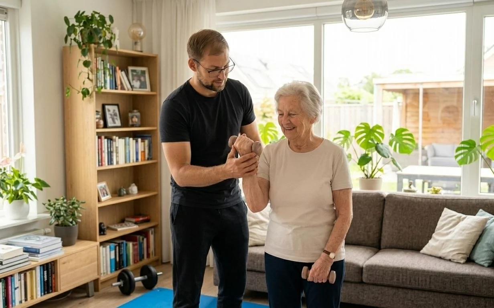

U heeft net een schouderprothese gekregen, of de operatie staat binnenkort gepland. De pijn waar u al maanden of jaren mee rondliep, hoopt u eindelijk kwijt te raken. Maar een nieuwe schouder vraagt geduld: de eerste weken draagt u een mitella, en daarna volgt een revalidatie van enkele maanden. In dit artikel leest u hoe de revalidatie na een schouderprothese verloopt, welke oefeningen u thuis kunt doen, wat u beter vermijdt en waarom het type prothese het verschil maakt. Wilt u liever begeleiding in uw eigen woonkamer? Onze kinesitherapeut aan huis komt bij u langs in de regio Grimbergen.
Kort samengevat
De revalidatie na een schouderprothese verloopt in fases: eerst bescherming en zachte beweging (week 0–6), dan actief bewegen (week 6–12), daarna kracht opbouwen en ten slotte het hervatten van uw gewone activiteiten. De meeste dagelijkse taken lukken na ongeveer drie maanden; volledig herstel duurt 6 tot 12 maanden. Volg altijd het protocol van uw chirurg.
Anatomische of Omgekeerde Schouderprothese?
Er bestaan twee hoofdtypes schouderprothesen. Welke u krijgt, hangt vooral af van de toestand van uw rotator cuff, de groep pezen die de bovenarmkop in de kom houdt en de arm helpt draaien.
- Anatomische prothese: bootst de normale vorm van de schouder na, met een bol op de bovenarm en een kom aan het schouderblad. Deze prothese wordt gekozen bij artrose met gezonde pezen. Om de prothese te plaatsen, wordt een pees aan de voorkant (de subscapularis) losgemaakt en nadien weer vastgehecht.
- Omgekeerde (reversed) prothese: hier zit de bol aan het schouderblad en de kom op de bovenarm. Deze prothese wordt gekozen wanneer de rotator cuff ernstig beschadigd of gescheurd is, en soms na een complexe breuk. De deltaspier neemt dan het grootste deel van het heffen over.
Het type prothese bepaalt welke bewegingen u in het begin moet beschermen. Vraag bij ontslag uit het ziekenhuis dus altijd welk type u kreeg, en vraag naar het schriftelijke revalidatieprotocol.
| Anatomische prothese | Omgekeerde prothese | |
|---|---|---|
| Wat beschermen? | De herstelde pees aan de voorkant (subscapularis) | De stabiliteit van het gewricht (risico op uit de kom gaan) |
| Vermijden in het begin | Arm krachtig naar buiten draaien, duwen of trekken tegen weerstand | Hand achter de rug, combinatie van naar achteren en naar binnen draaien |
| Steunen op de arm | Niet in de eerste 6 weken | Niet in de eerste 6 weken (ook niet bij opstaan) |
| Verwachte beweeglijkheid | Vaak dicht bij normaal | Goed heffen, draaien blijft vaak wat beperkt |
De Fases van de Revalidatie
Onderstaand verloop is een typisch schema. Elke chirurg heeft een eigen protocol, en na een breuk of een zwakke botkwaliteit kan alles trager gaan. Zie de weken dus als richtlijn, niet als deadline.
zachte passieve beweging
zelf actief bewegen
elastiek, lichte gewichtjes
tuinieren, zwemmen
Fase 1: bescherming (week 0–6)
U draagt de mitella overdag en meestal ook ’s nachts. De spieren rond de schouder mogen de arm nog niet zelf optillen. Uw kinesitherapeut beweegt de arm passief, of u helpt de geopereerde arm met uw gezonde arm. Het doel is stijfheid voorkomen zonder de prothese of herstelde pees te belasten. Elleboog, pols en hand beweegt u wel dagelijks, zodat die niet verstijven.
Fase 2: actief bewegen (week 6–12)
Na de controle bij de chirurg mag de mitella meestal af. U leert de arm weer zelf te heffen, eerst liggend (dan weegt de arm minder), daarna zittend en staand. Lichte dagelijkse taken zoals eten, uw gezicht wassen en een kopje op tafel zetten worden weer mogelijk.
Fase 3: kracht (maand 3–6)
Nu bouwt u kracht op met een elastische band en lichte gewichtjes. Bij een omgekeerde prothese ligt de nadruk op de deltaspier en de spieren rond het schouderblad. Uw armen boven uw hoofd brengen, een kast openen en uw haar kammen worden steeds vlotter.
Fase 4: functie (maand 6–12)
U werkt toe naar uw eigen doelen: tuinieren, zwemmen, kleinkinderen optillen. Zware lasten boven het hoofd en schokbelasting blijven ook op lange termijn af te raden, zeker met een omgekeerde prothese.

Oefeningen voor Thuis per Fase
De oefeningen hieronder zijn klassiekers na een schouderprothese. Doe ze enkel wanneer uw chirurg of kinesitherapeut ze voor uw fase heeft goedgekeurd. Licht trekken is normaal; scherpe pijn of een “klik” met pijn betekent stoppen.
Fase 1 (met toestemming)
- Elleboog, pols en vingers: buig en strek de elleboog uit de mitella, maak een vuist en spreid de vingers. 10 keer, meerdere keren per dag.
- Pendeloefening: steun met de gezonde hand op een tafel, laat de geopereerde arm ontspannen hangen en maak met uw romp kleine cirkeltjes, zodat de arm passief meeschommelt. 1 minuut.
- Schouderbladen zetten: trek beide schouderbladen rustig naar achteren en omlaag, 5 seconden vasthouden, 10 keer.
- Geholpen heffen in ruglig: neem de pols van de geopereerde arm vast met uw gezonde hand en breng de arm samen omhoog, enkel zo ver als uw kinesitherapeut toelaat.
Fase 2
- Tafelglijden: zit aan tafel, leg uw hand op een handdoek en schuif die naar voor terwijl u licht voorover buigt.
- Actief heffen in ruglig: breng de arm zelf omhoog met de elleboog licht gebogen, eerst met hulp van de gezonde arm, daarna zonder.
- Muurwandelen: sta voor een muur en laat uw vingers langzaam naar boven “lopen”.
Fase 3
- Elastiek naar buiten draaien met de elleboog tegen het lichaam (bij een anatomische prothese pas wanneer de pees het toelaat).
- Heffen tot schouderhoogte met een licht gewichtje of een flesje water.
- Roeien met elastiek voor de spieren rond het schouderblad.
Niet forceren
Meer oefenen is niet altijd beter. Te vroeg te veel kracht zetten kan een herstelde pees laten losscheuren of een omgekeerde prothese uit de kom duwen. Bouw rustig op en spreek stijgingen af met uw kinesitherapeut. Hetzelfde principe zien we bij andere schouderproblemen, zoals een frozen shoulder.
Praktische Tips voor Thuis
- Slapen: slaap halfzittend of op de rug met een kussen onder de elleboog, zodat de arm iets voor het lichaam ligt. Niet op de geopereerde schouder liggen.
- Aankleden: trek eerst de geopereerde arm in de mouw, bij uitkleden als laatste eruit. Kies ruime kleding met knopen of een rits vooraan.
- Opstaan: steun enkel op uw gezonde arm. Een hogere stoel met armleuningen helpt.
- Koelen: een coolpack in een doek, 15 tot 20 minuten na het oefenen, verlicht pijn en zwelling.
- Valpreventie: met een arm in de mitella is uw evenwicht minder goed. Ruim losse matjes op en zorg voor goed licht ’s nachts. Meer tips leest u in ons artikel over valangst bij ouderen.
Neem contact op met uw arts bij:
- Koorts boven 38,5°C, of een wonde die rood, warm of lekkend wordt
- Een plotse “klik” of verschuiving gevolgd door hevige pijn of een arm die u niet meer kunt bewegen
- Toenemende pijn die niet reageert op uw pijnstilling
- Doof gevoel, tintelingen of krachtverlies in hand of vingers dat niet verdwijnt
Waarom Kinesitherapie aan Huis na een Schouderprothese?
In de eerste weken mag u niet met de auto rijden en is elke verplaatsing met een arm in de mitella vermoeiend. Kinesitherapie aan huis neemt die drempel weg. Bovendien leert u de oefeningen meteen in uw eigen omgeving: aan uw eigen tafel, met uw eigen stoel en in uw eigen badkamer. Dat maakt het makkelijker om ze tussen de sessies vol te houden.
Bij PhysioVisit komt onze kinesitherapeut aan huis in Grimbergen, Strombeek-Bever, Humbeek, Beigem en Koningslo. We volgen het protocol van uw chirurg, passen de oefeningen aan uw fase aan en houden uw vooruitgang bij. Lees meer over onze aanpak bij orthopedische revalidatie of over de revalidatie na een schouderoperatie in het algemeen. Wilt u tijdens de revalidatie uw algemene conditie op peil houden, dan kunt u bij ons ook een hometrainer huren voor €2 per dag; fietsen met de benen belast uw schouder niet.
Veelgestelde Vragen over Revalidatie na een Schouderprothese
Revalideren na uw Schouderprothese aan Huis?
Onze kinesitherapeut komt bij u thuis in de regio Grimbergen en begeleidt u fase per fase naar een sterke, soepele schouder.
Conclusie
De revalidatie na een schouderprothese vraagt geduld, maar het resultaat is voor de meeste patiënten een schouder met veel minder pijn en een beter bruikbare arm. De sleutel is een stapsgewijze opbouw: eerst beschermen, dan bewegen, daarna kracht en ten slotte functie. Ken het type prothese dat u kreeg, want dat bepaalt welke bewegingen u in het begin vermijdt. Doe uw oefeningen dagelijks, maar forceer niet.
Heeft u vragen over uw revalidatie, of wilt u begeleiding bij u thuis? Neem gerust contact met ons op. Bent u na een val aan de schouder geopereerd? Lees dan ook ons artikel over kinesitherapie na een gebroken bovenarm.